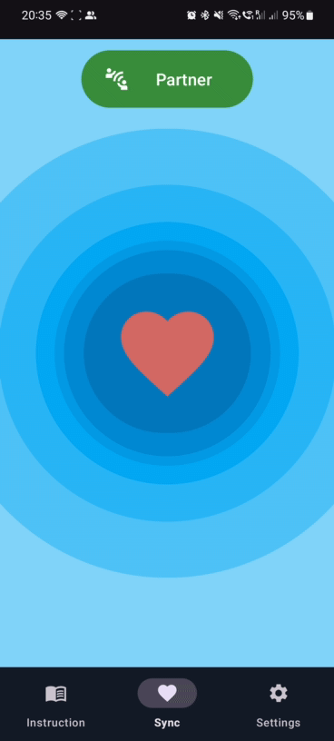

Make the first move
Tap “Ready” when you’re in the mood for intimacy.
A private way to discover mutual desire. No pressure, no awkward guessing. Just the two of you, finding the right moment.
Free to use · Made for couples · For Android

Tap “Ready” when you’re in the mood for intimacy.
Your partner won’t see your signal unless they express interest too.
When you both tap “Ready”, you’ll both receive a notification.